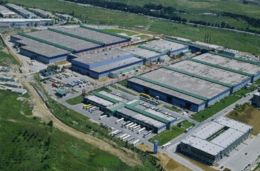
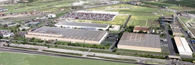
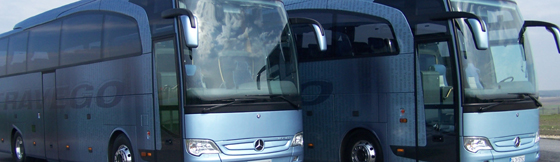
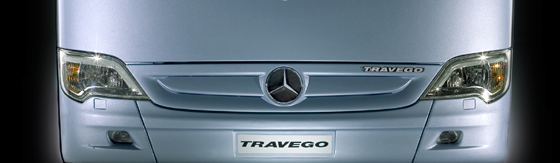

Otomobil ve ticari araç üretiminde Avrupa'nýn en büyük fabrikalarýna sahip Türkiye, Ar-Ge faaliyetlerinde de söz sahibi olmaya baþlýyor. Büyük otomotiv üreticilerinden biri olan Mercedes'in çatý þirketi Daimler en önemli Ar-Ge görevini Ýstanbul'daki Mercedes-Benz Türk Hoþdere Fabrikasý'na verdi. Daimler'in Ar-Ge merkezleri olan Almanya, Japonya ve Brezilya'nýn arasýna Türkiye de katýldý.
Türkiye, katma deðeri yüksek ürünler üretilmesi için geçen yýl nisan ayýnda "Araþtýrma ve Geliþtirme Faaliyetlerinin Desteklenmesi Hakkýnda Kanun"u yürürlüðe soktu. Bu alanda yatýrým yapmak isteyenler sektör ya da faaliyet alaný ayrýmý yapmaksýzýn 2024'e kadar teþviklerden faydalanabilecek.
Halihazýrdaki Ar-Ge Yasasý'nýn teþviklerinden faydalanmak isteyen Mercedes-Benz Türk, 15 gün önce Daimler'den Ar-Ge belgesini aldý. Düþük maliyetle kaliteli ürün üretilebilir mi diye bakýldýðýnda teþviklerin önem kazandýðýný anlatan Mercedes-Benz Türk Direktörler Kurulu Baþkaný Jürgen Ziegler, "Bu sertifikayla artýk sadece maddi avantaj saðlamýyoruz, katma deðer de üretebiliyoruz. Daimler'in bundan önceki Almanya, Japonya ve Brezilya Ar-Ge merkezleri arasýna Türkiye de katýldý." þeklinde konuþtu. Ýstanbul'da gazetecilerle bir araya gelen Ziegler, bu adýmý yeni ürün üretilmesinden çok daha önemli bulduðunu ifade etti. Ziegler, Türkiye ekonomisinde Ar-Ge'nin katma deðerinin artmasý gerektiðini vurguladý.

Mercedes Hoþdere Fabrikasý

Mercedes Aksaray Kamyon Fabrikasý
Mercedes'in Aksaray'da kamyon, Ýstanbul Hoþdere'de de þehirlerarasý ve belediye otobüsü üretim fabrikasý var. Türkiye'de 40 yýldýr otobüs, 20 yýldýr kamyon üreten þirketin baþkanýna göre, Türkiye'de büyük yetenekler var. Türk mühendisler, tasarruflu ürünler geliþtirmeye yönelik yetiþtirilmiþ. Bu, bir sanat. Bu ürünler geliþmiþ ülkelere satýlabilir. Þu an geliþmekte olan ülkelerde kullanýlabilecek araçlar üzerinde çalýþýyoruz. Ar-Ge kanununa göre, teþvikten faydalanmak isteyen þirketin en az 50 Ar-Ge personeli çalýþtýrmasý zorunlu. Bu þirket, Kurumlar ve Gelir Vergisi kanunlarý gereðince Ar-Ge harcamalarýnda yüzde 100 matrah indirimi kazanacak. 500'den fazla Ar-Ge personeli çalýþtýran iþletmelerin ise her yýl, bir yýl önceye göre ek olarak yaptýklarý Ar-Ge harcamalarýnýn yarýsý vergi matrahýndan indirilecek. Ayrýca, her ölçekte þirketin ulusal ve uluslararasý fonlarca desteklenen Ar-Ge ve yenilik projeleri için de indirim ve teþvikler öngörülüyor. Ayrýca, Ar-Ge merkezlerinde ve Ar-Ge projelerinde çalýþan personelin ücreti, belirli oranlarda Gelir Vergisi'nden muaf olacak ve þirkete Maliye Bakanlýðý tarafýndan sigorta primi desteði saðlanacak.
2008'de bir önceki yýla oranla kamyon üretiminde 17 bin 300 adetle yüzde 7 ve otobüs üretiminde 3 bin 500 adetle yüzde 17 oranýnda daha fazla üretim yapan Mercedes-Benz Türk'ün Baþkaný Ziegler, 2009'u zor yýl olarak deðerlendirdi. Þirket, 2008'de 2 bin 650 otobüs ihraç ederek 2007'ye göre yüzde 10, 6 bin 500 kamyon ihracatý ile de yüzde 5 daha fazla satýþ yaptý. 2009'da üretim rakamlarýnýn ortalama yüzde 30 azalacaðýný bildiren Ziegler, hükümetin ekonomiyi destekleme paketinden beklentilerini anlattý. Ziegler, 30 yaþýný aþmýþ araçlar için yapýlan düzenlemenin sektörü kurtaracaðýný vurgulayarak, "Yasa bir an önce yürürlüðe girmeli, iþin bu kadar uzamasý bizi mutsuz ediyor." dedi.


TRAVEGO modeli otobüsler Hoþdere Fabrikasý'nda üretiliyor.
Kaynaklar:
- www.zaman.com.tr/haber.do?haberno=817930... > Türkiye, Mercedes'in dünyadaki dört Ar-Ge merkezinden biri oldu, ZAMAN, 22-02-2009
- www.mercedes.com.tr/... > Mercedes-Benz Türkiye > Hoþdere Otobüs Fabrikasý
- www.mercedes.com.tr/... > Mercedes-Benz Türkiye > Mercedes Aksaray Kamyon Fabrikasý
- www.radikal.com.tr/Radikal.aspx?aType=RadikalHaberDetay&ArticleID=900904 > Daimler, en önemli Ar-Ge iþini Mercedes-Benz Türk'e verdi, Radikal, 29-09-2008
- www.hurriyet.com.tr/ekonomi/10006617.asp > Mercedes Türkiye'yi þimdi de "ucuz gövde" merkezi yapacak, Hürriyet, 29-03-2008
- http://yenisafak.com.tr/ekonomi/?t=09.10.2007&c=3&i=92822 > Mercedes'i en çok alan ikinci ülkeyiz, Yeni Þafak,
12-01-2008
- www.hurriyet.com.tr/ekonomi/8010606.asp?m=1 > Mercedes büyümeye devam edecek, Hürriyet, 11-01-2008
- www.traraba.com/2006/mercedes... > Mercedes Travego 'nun 1000. Otobüsü Yollarda
|